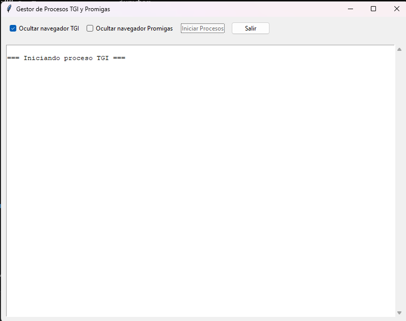

Manual del Usuario: Gestión de Volúmenes TGI y Promigas¶
1. Introducción¶
Este sistema automatiza la descarga y procesamiento de datos de volúmenes de gas de TGI y Promigas, actores clave en la distribución de gas natural en Colombia. Proporciona información crítica para la gestión operativa diaria, incluyendo:
- TGI: Consolidado de recibos diarios con detalles de entregas por productor.
- Promigas: Volúmenes entregados por productor en KPCD (Miles de Pies Cúbicos por Día).
Objetivo Principal¶
Automatizar la recolección de datos operativos desde los portales web de TGI y Promigas, garantizando: - Actualización diaria sin intervención manual. - Procesamiento estandarizado en formatos Excel. - Interfaz intuitiva para monitoreo y control del proceso.
2. Configuración Inicial¶
2.1 Requisitos del Sistema¶
- Python 3.8+ y gestor de paquetes
pip. - Librerías requeridas:
pip install pandas selenium openpyxl webdriver-manager tkinter - Google Chrome actualizado.
2.2 Configuración de Rutas¶
Los archivos procesados se guardan en:
C:\Users\<usuario>\OneDrive - GEAM\Operaciones GEAM\Operaciones\
volumen_tgi.xlsx: Resultados de TGI.
- volumen_promigas.xlsx: Resultados de Promigas.
2.3 Credenciales de Acceso¶
- Asegurar acceso a los portales:
- TGI: https://cga.tgi.com.co:8081/
- Promigas: https://www.promigas.com/BEO/
3. Funcionalidades Clave¶
3.1 Interfaz Gráfica (GUI)¶

- Controles Principales:
- Checkboxes: Ocultar/mostrar navegadores durante la ejecución.
- Botones: Iniciar procesos | Salir.
- Área de Logs: Muestra eventos en tiempo real.
3.2 Procesos Automatizados¶
| Función | Descripción |
|---|---|
promigas() |
Descarga datos diarios de Promigas, procesa KPCD y genera Excel estructurado. |
tgi() |
Extrae consolidado de TGI, limpia datos y exporta a Excel con formato. |
4. Flujo de Operación¶
4.1 Ejecución Automática al Iniciar¶
La aplicación inicia los procesos 5 segundos después de abrirse, sin requerir interacción.
4.2 Pasos Detallados¶
- Inicio de Procesos:
- Navegación automática a los portales.
- Configuración de fechas (hoy - 5 días para Promigas).
- Descarga de Datos:
- Interacción con calendarios y botones vía Selenium.
- Exportación a Excel desde las plataformas.
- Procesamiento:
- Limpieza de datos.
- Formateo de columnas y conversión de tipos.
- Guardado:
- Archivos Excel generados en rutas predefinidas.
Diagrama de Flujo¶
sequenceDiagram
participant Usuario
participant GUI
participant Selenium
participant Procesamiento
Usuario->>GUI: Abre aplicación
GUI->>GUI: Ejecución automática en 5s
GUI->>Selenium: Inicia TGI (oculto)
Selenium->>TGI Portal: Descarga consolidado
Selenium->>Procesamiento: Envía datos
Procesamiento->>Archivo: Guarda volumen_tgi.xlsx
GUI->>Selenium: Inicia Promigas (visible)
Selenium->>Promigas Portal: Descarga KPCD
Selenium->>Procesamiento: Envía datos
Procesamiento->>Archivo: Guarda volumen_promigas.xlsx
GUI->>Usuario: Muestra logs de éxito/error5. Personalización Avanzada¶
5.1 Modo de Ejecución del Navegador¶
- Headless (predeterminado):
self.tgi_ocultar = tk.BooleanVar(value=True) # TGI oculto self.promigas_ocultar = tk.BooleanVar(value=False) # Promigas visible - Modificar en la GUI desmarcando checkboxes.
5.2 Parámetros de Fecha¶
- Promigas: Ajustar rango en código (línea 93):
start_date_field.send_keys("01/05/2024") # Cambiar fecha inicial
6. Manejo de Errores¶
| Error Común | Solución |
|---|---|
| Timeout en Selenium | Verificar conexión a internet y actualizar WebDriver. |
| Archivo de salida bloqueado | Cerrar Excel antes de ejecutar. |
| Login requerido | Asegurar sesión activa en portales. |
7. Estructura del Código¶
7.1 Componentes Principales¶
- Funciones de scraping:
promigas(): Maneja interacción con Promigas.tgi(): Gestiona descarga desde TGI.- Clase
Application: Construye la GUI y gestiona hilos.
7.2 Flujo de Datos¶
# Ejemplo simplificado
def tgi(ocultar_navegador):
driver = configurar_driver(ocultar_navegador)
# ... (interacciones Selenium)
procesar_datos(raw_data)
guardar_excel(df_procesado)
class Application(tk.Tk):
def __init__(self):
# ... (inicializar GUI)
self.after(5000, self.iniciar_procesos) # Auto-run